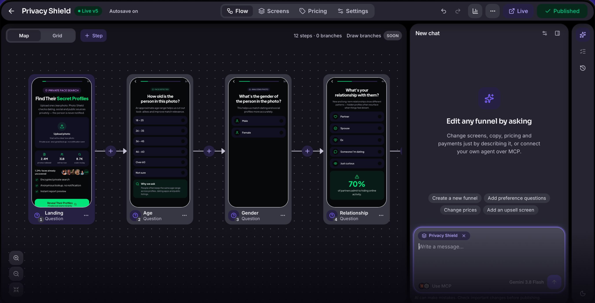
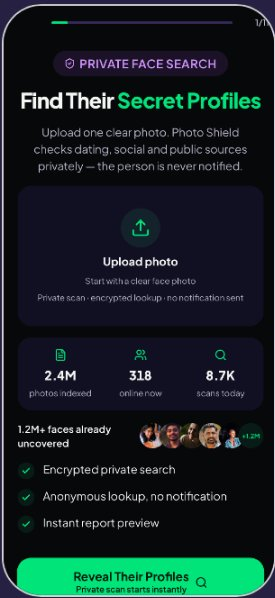
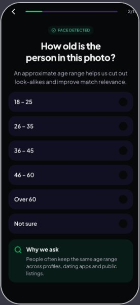
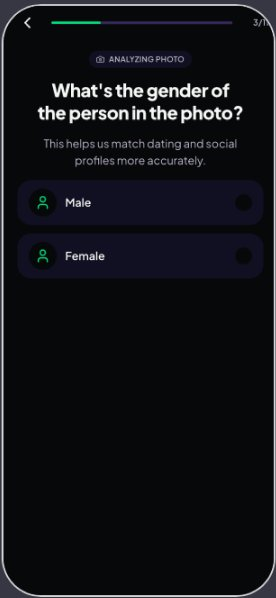
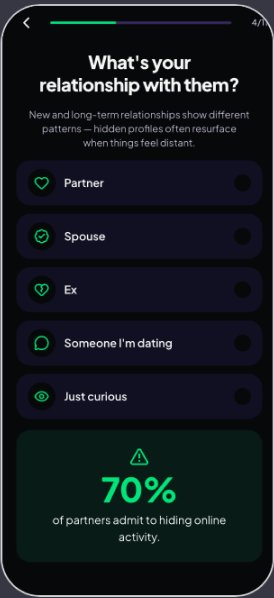

Every paywall change means a new app release
You want to test a price or an offer this week. Instead it waits for a build, a review and the next release cycle.
For subscription apps that grow with paid ads
Quiz, paywall, web checkout and app unlock in one workflow. Launch a funnel for every ad angle and change prices without an app release or a ticket to engineering.
See how it worksИнтеграции Meta, TikTok, Paddle, RevenueCat и Adapty реализованы, проверка на живых аккаунтах еще идет; Stripe как подключение в workspace – ближайшие планы (файлы 16, 18). Уточнить у Лехи. Нужно от Лехи: подпись под главной кнопкой (бесплатный старт? нужна ли карта? есть ли пробный период?) и цифра, за сколько реально запускается первая воронка. Book a demo ведет на почту – заменить на календарь во всех 4 местах (шапка, первый экран, сравнение, финал).

What growth teams say when web funnels slow them down.
You want to test a price or an offer this week. Instead it waits for a build, a review and the next release cycle.
The creative is ready, the funnel is not. Growth ideas queue up behind the product roadmap.
Pixel here, server events there, an attribution tool somewhere else. The numbers never quite match.
A quiz tool, a landing builder, a checkout, analytics and custom code that only one developer understands.
A web-to-app (web2app) funnel moves the sale from the app store to the web. A person answers a quiz, sees a plan made for them, pays on a web checkout and opens the app with the subscription already active.
A Meta, TikTok or Google ad with one specific promise
Questions that qualify the person and show the plan is for them
A personalized plan, score or forecast
Plans, trial and offer, tested on the web
Stripe or Paddle, wallets and upsells
Deep link into the app, subscription already active
Funeli covers every step after the ad click. Real screens from a funnel built in Funeli:




Экраны – из воронки Photo Shield, продукта Лехи. Подтвердить, что их можно показывать на витрине.
Everything a growth team needs to launch, sell and learn – without stitching tools together.
Long multi-step quizzes with branching, computed answers and personalized results. 40+ ready components for questions, social proof and offers.
Plans, trials, exit offers and post-purchase upsells. Checkout with Paddle or Stripe on your own branded page.
Stripe в workspace – ближайшие планы (16, 18 §9).
A verified web purchase turns into access in your app through RevenueCat or Adapty. No second onboarding, no lost subscribers.
Ядро реализовано, проверка на живых аккаунтах RevenueCat и Adapty еще идет (18 §10).
Split traffic between variants and compare them by revenue per visitor, not just by clicks.
Движок экспериментов есть; отдельная страница Experiments – в планах (19 C).
Step-by-step conversion, checkout, revenue and campaign breakdown for every funnel and version.
Meta and TikTok pixel plus server events, sent from the same events your analytics uses.
Реализовано, проверка доставки на живых аккаунтах еще идет (18 §8).
Publish funnels on your branded subdomain for ad trust and clean tracking.
Drafts, validation before publishing, full history and one-click restore of any live version.
Describe the change – a new funnel, extra questions, new prices, an upsell screen – and the built-in agent makes it. Or connect your own agent, like Claude or ChatGPT, over MCP: it works with the same tools your team uses.
Animated illustration of the agent workflow.
Анимация-иллюстрация для понимания идеи. Заменить на запись экрана из редактора Funeli: 30–60 секунд, без звука, по кругу (Леха).
Визуальная самопроверка агента и панель Review – в планах (19 G), на витрине их не обещаем. Подключение Claude/ChatGPT на реальных аккаунтах еще проверяется (19 §3).
AI can make mistakes. That is why nothing reaches paid traffic without your approval.
Нужны цифры и цитата от Лехи: сколько воронок и вариантов собрано для Photo Shield, сколько занимает запуск варианта, изменение конверсии или выручки на посетителя. Подтвердить, можно ли публиковать $900 и $100 000 (01, 12) и название Photo Shield.
A higher conversion rate can still make less money. Funeli tracks revenue per visitor, so you compare variants by what they earn.
Find the step where people drop off, open it in the editor and fix it – or ask the agent to set up a test.
Аналитика на холсте с переходом к правке шага (Analytics Canvas) и предложения агента по аналитике – в планах (19 D, E). Пример цифр – иллюстрация из файла 15.
Illustrative example. Variant B converts less but earns 22% more per visitor.
Add Paddle or Stripe and RevenueCat or Adapty once for your workspace.
Start from scratch, from a theme or by describing the funnel in plain words.
Check every screen, connect your domain and pixels, publish when you approve.
See conversion and revenue by step, campaign and variant, then test the next idea.
Body, goal and habit quizzes that end in a personal plan.
Assessments for sleep, stress, focus or sobriety, where the diagnosis is part of the sale.
Level and goal tests before a personalized learning plan.
Condition-specific programs, with your team in control of every claim.
Compatibility, personality and reading flows.
If a few answers make your offer more relevant, it fits a web2app funnel.
Your events flow into the tools you already use – no new analytics silo.
Только реальные интеграции из файла 16. Amplitude и Mixpanel работают; остальные реализованы, ждут проверки на живых аккаунтах. Логотипы Adapty, AppsFlyer и Amplitude: нужны файлы SVG, сейчас на их месте точки.
Funeli is not the only path. Here is an honest view of the options teams usually weigh.
| Funeli | Build in-house | Stitch tools together | Module of a monetization platform | |
|---|---|---|---|---|
| Who launches a new variant | Your growth team or an AI agent | Engineers, in a sprint | Whoever knows every tool | Your growth team |
| AI agents | Built-in agent and your own agents over MCP | Whatever you build | Rarely | Depends on the vendor |
| Web purchase to app access | RevenueCat or Adapty, connected | You build and maintain it | Custom glue code | Native to the platform |
| Revenue by funnel step | Built in, plus Amplitude and Mixpanel | You build the dashboards | Spread across tools | Inside the platform |
| Getting started | Move one funnel first | A project of its own | Fast for a single page | Tied to the whole platform |
| Where it beats Funeli | – | Unlimited customization, no vendor fee | Cheapest for one simple page | One vendor for app and web monetization |
Move one funnel first. Prove it works, then move the rest.
Screens, branching, theme, paywall and checkout.
Events, ad conversions, payments and app access – before any traffic moves.
Start with one campaign, compare, then scale.
Reuse themes and components across every funnel.
Import from URL: paste a public funnel link and get an editable draft.
Импорт по ссылке – в планах (19 A), код в основном готов. Уточнить у Лехи, показывать ли на витрине.
A tool for the web part of a subscription app's acquisition flow: quiz, personalized result, paywall and checkout, connected to the app so the subscription is active after install. Funeli also lets AI agents build and edit these funnels.
Keep them. Funeli connects to RevenueCat and Adapty to turn a web purchase into access in your app. You don't replace your subscription infrastructure.
Paddle and Stripe. Paddle works as a merchant of record and handles tax for you; Stripe gives you direct control of payments.
Stripe в workspace – ближайшие планы.
After checkout they get a link to install or open the app. The purchase is verified and access is granted through RevenueCat or Adapty, so the subscription is already active.
Selling a subscription on your own website is common practice. Rules for linking to it from inside the app differ by country and program and can include store fees. Check the current Apple and Google rules for your markets; Funeli doesn't give legal advice.
No. Agents work on drafts. Changes are validated, you can preview them, and publishing live requires your confirmation. Every version stays in history.
The built-in agent in the editor, or your own agent, such as Claude or ChatGPT, connected over MCP.
Подключение на реальных аккаунтах еще проверяется (19 §3).
No. Funeli has its own funnel analytics and sends the same events to Amplitude, Mixpanel and AppsFlyer, so your numbers stay consistent.
Yes. Pixel and server events are set up once for your workspace, and each funnel can inherit or override them.
Проверка доставки на живых аккаунтах еще идет.
Yes, publish funnels on your branded subdomain. Root-domain support is not part of the first release.
Not always. Web2app wins when a quiz and a personalized offer raise intent before the price, and when you want to test offers quickly. It adds steps, so test it on one campaign first.
Yes. Start with one funnel: recreate it, check tracking in parallel, then move traffic. Import from a public URL is on the way.
Импорт – в планах (19 A).
Pricing depends on the scale of your funnels, not on the number of seats. Write to hello@funeli.top for details.
Цены не опубликованы; принцип – рабочая гипотеза из 06. Уточнить у Лехи.
Pick the path that fits where you are.
Create a workspace and build your first funnel – yourself or with the agent.
Running many funnels on serious ad spend? We'll show Funeli on a funnel like yours.
Сейчас ссылка открывает письмо на hello@funeli.top с темой. Заменить на запись в календаре (Calendly или аналог), когда Леха даст ссылку.
Follow product updates: new features, integrations and releases.